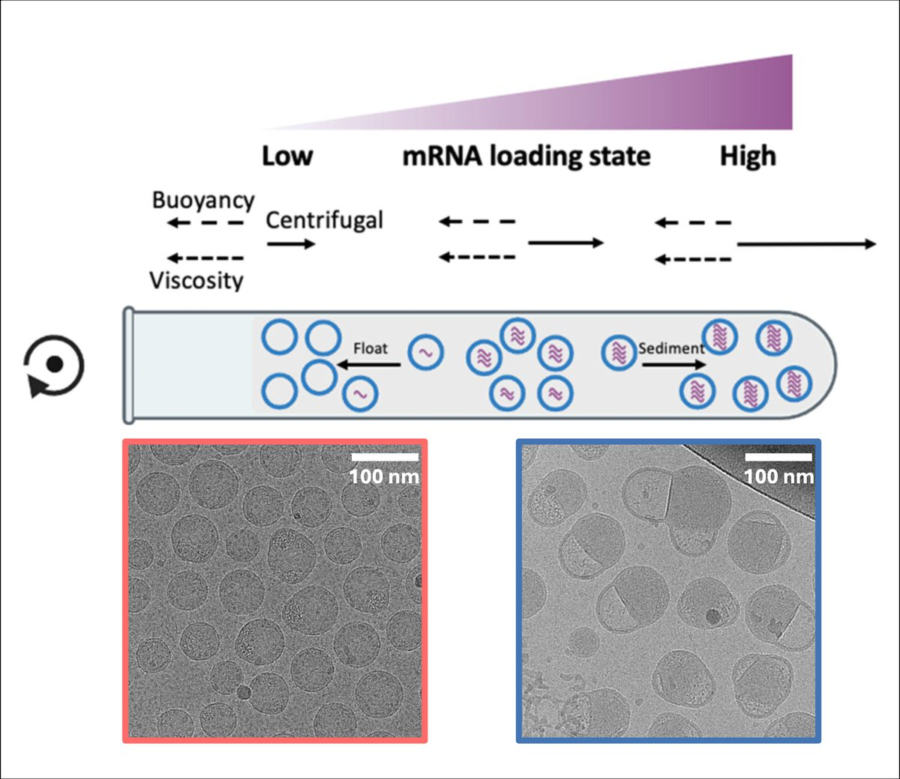
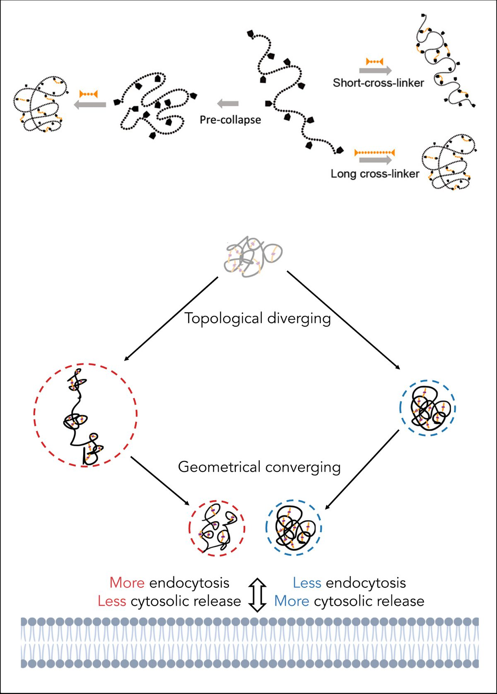
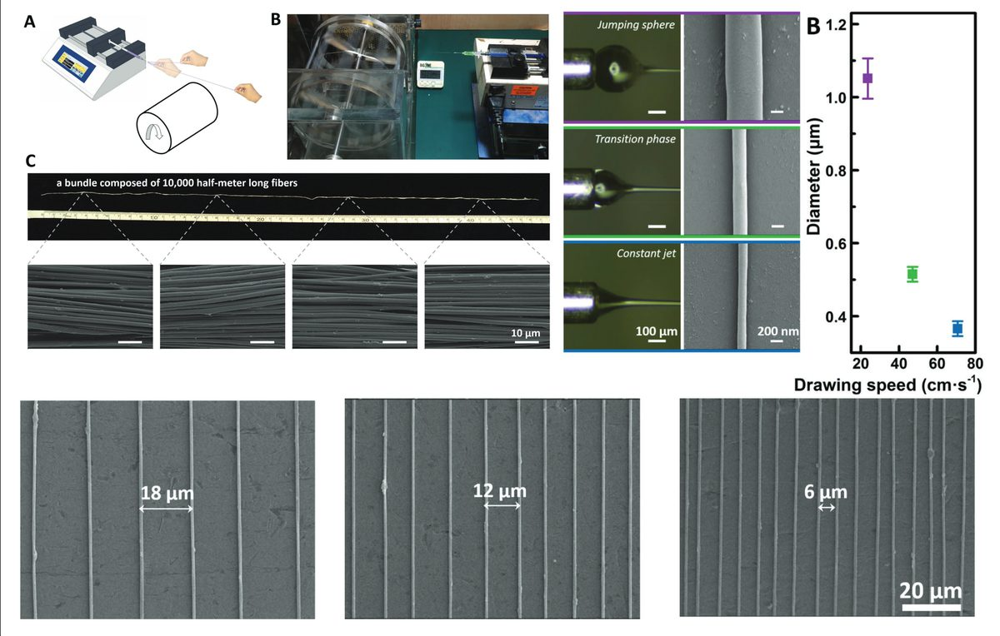

Research

mRNA LNP formulation
How mRNA loading and lipid composition govern transfection potency, guiding rational design of more potent and stable lipid nanoparticle vaccines and therapeutics.

Single-chain nanoparticles
Compaction and structural dynamics of single-chain polymeric nanoparticles, and how their conformation influences cellular uptake.

Draw-spun nanofibers
Continuous draw-spinning of kilometer-long silver and polymer submicron fibers for flexible, transparent conductors.